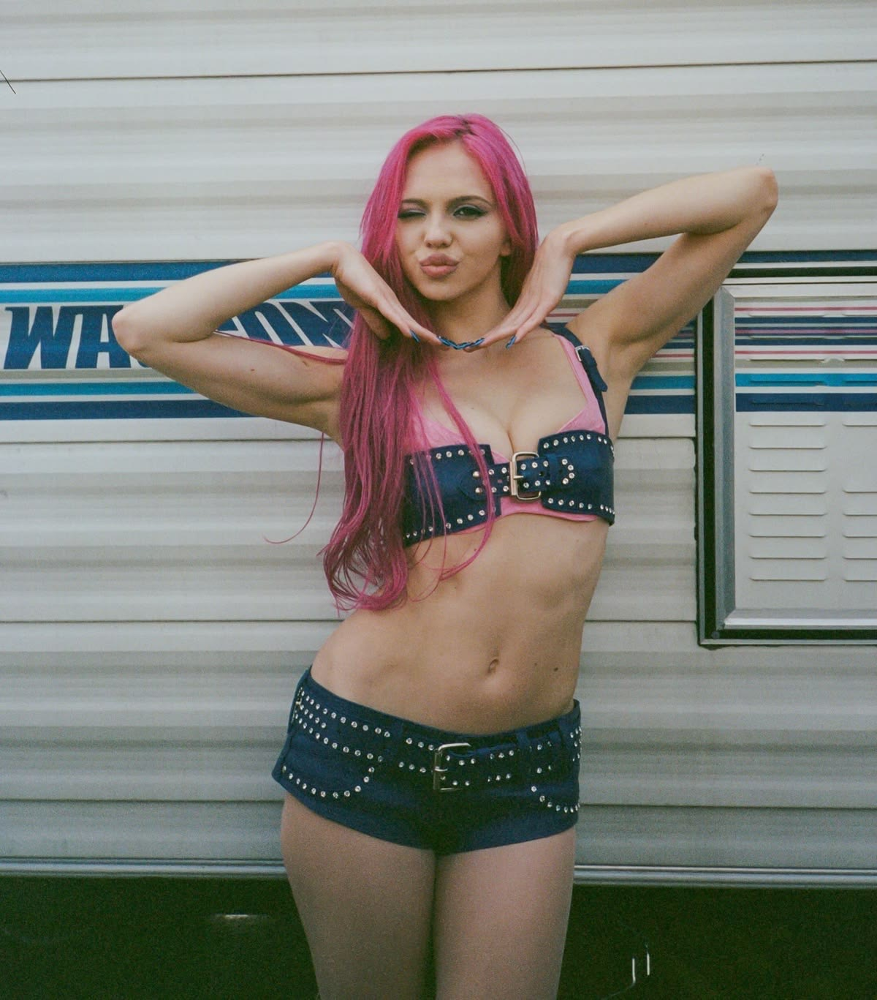
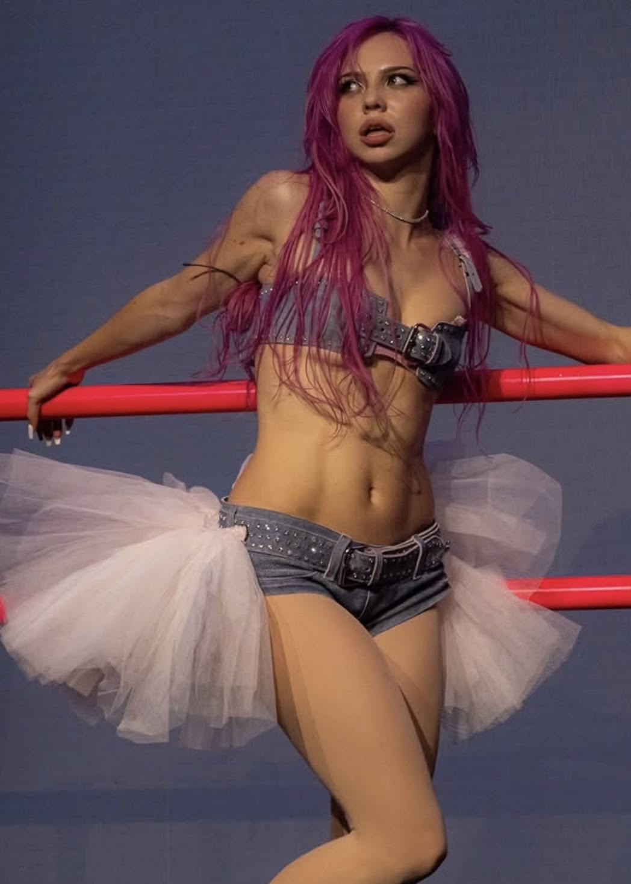

Su cabello rosa se convirtió en uno de sus elementos visuales más característicos.
En marketing, esto se relaciona con los activos distintivos de marca: elementos que permiten reconocer una marca incluso antes de ver su nombre.
Moraleja: no basta con verte diferente, necesitas que te recuerden por algo.
02/08
ADÉLA no tiene solamente una estética. Tiene todo un universo.


ballet
dosmilero
vestuario
UNIVERSO DE MARCA
Ballet, moda, referencias dosmileras, vestuario y una personalidad provocadora.
Todos estos elementos contribuyen a construir una identidad artística coherente.
Esto se relaciona con el universo de marca: crear un mundo propio alrededor de una marca para que las personas puedan reconocerlo y conectar con él.
Porque una marca memorable no solo tiene un logo. Tiene personalidad.
03/08
ADÉLA
A veces, la historia detrás de una marca es tan importante como lo que ofrece.
dream academyeliminadasolista
ADÉLA participó en Dream Academy, fue eliminada y posteriormente comenzó a desarrollar su carrera como solista.
Su trayectoria forma parte de la historia que su audiencia puede conocer y seguir.
Esto es storytelling: utilizar historias para generar conexión e identificación con una marca.
STORYTELLING
Las personas no solo conectan con lo que haces, sino también con lo que hay detrás.
04/08
En una industria llena de artistas, ¿qué hace que alguien destaque?
ballet
influencias musicales
estética
DIFERENCIACIÓN
La combinación de influencias musicales, referencias de ballet, estética y personalidad contribuye a que ADÉLA tenga una propuesta artística propia.
En marketing, esto se llama diferenciación: encontrar aquello que te distingue de las demás opciones.
No necesitas ser para todos. Necesitas tener algo que te haga única.
05/08
UGC
¿Y si tus propios consumidores hicieran tu publicidad?
Con «Ain’t In LA», la idea de mostrar tu ciudad se convirtió en un formato que las personas podían adaptar y compartir.
La audiencia dejó de ser solamente espectadora y comenzó a crear contenido alrededor de la canción.
Esto se conoce como UGC (User Generated Content): contenido creado por los propios usuarios que puede amplificar el alcance de una marca.
«Ain’t In LA» — ADÉLA
Cuando tu audiencia participa, tu contenido puede llegar mucho más lejos.
06/08
No se trata solamente de que te conozcan. Se trata de qué recuerdan de ti.
Su cabello rosa, el ballet, su estética y su propuesta musical contribuyen a construir una identidad reconocible.
Esto conecta con el posicionamiento de marca: el lugar que una marca busca ocupar en la mente de las personas.
Ser visible consigue atención. Ser reconocible construye memoria.
POSICIONAMIENTO
cabello rosa
barra de ballet
tutú
propuesta musical
estética
07/08
¿Qué puede aprender tu negocio de ADÉLA?
1. Encuentra un elemento que te identifique.
2. Construye una personalidad propia.
3. Diferénciate de tu competencia.
4. Mantén una identidad coherente.
5. Crea contenido con el que tu audiencia quiera participar.
Llamar la atención es el comienzo. Conseguir que te recuerden es el verdadero reto del branding.